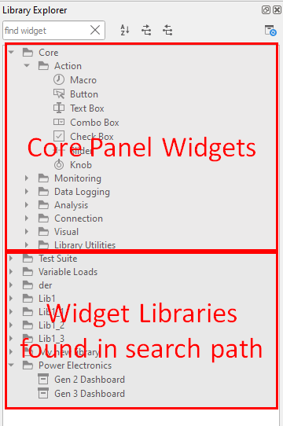
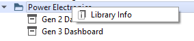
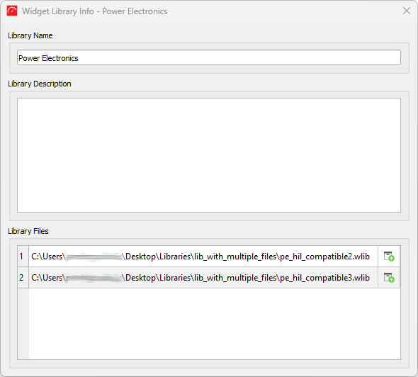
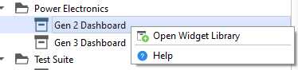
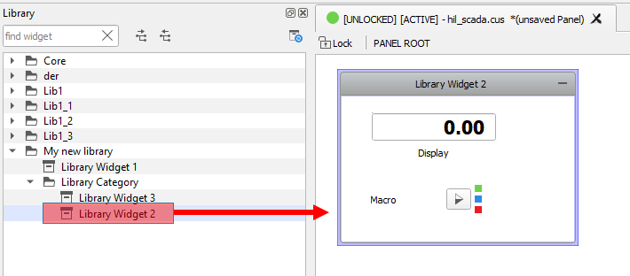
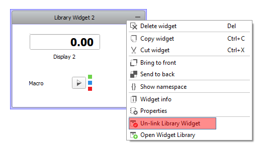

This section describes the key functionalities of Library Widgets and how they should be used.
The Library Explorer dock shows all Widget Libraries found in the
library search path including the default Core Panel widgets. Figure 1. Library Explorer dock

To open the Library Info dialog (Figure 3), which shows
more information about Widget Library, right-click on the Widget Library
inside the Library Explorer dock and choose the Library
Info action (Figure 2).
Figure 2. Open Library Info context menu action

Figure 3. Library Info dialog

In order to open the widget library where the selected library component is specified,
right-click on the Library Widget inside the Library Explorer
dock and choose the Open Widget Library action (Figure 4).
Figure 4. Library Widget context menu actions

Note:Library Info and
Open Widget Library actions are not available for
Core Panel Widgets.
To open Library Widget or Core Panel
Widgets documentation, right-click on the Library Widget (Core widget)
inside the Library Explorer dock and choose the
Help action (Figure 4).
To modify the search path, select the User libraries path settings
action from the Panel menu and the library search path settings dialog will be opened
(Figure 5).Figure 5. User libraries search path settings dialog
Note: After Widget Libraries are reloaded,
the Library dock is reloaded automatically.
Library Widgets can be used in a Panel or another Widget Library by simply dragging and
dropping them from the Library Explorer
dock to the Panel (or Group/Sub-Panel) canvas (Figure 6).Figure 6. Drag and Drop Library Widget

When the Library Widget is added to the Panel, it is linked to its Widget Library and you can
only change its position, size, name, and label. The Library Widget's child widgets cannot be
changed in any way (moved, resized, deleted...).
Note: You cannot copy/paste new widgets
to the added Library Widget. On the other hand, you can copy/paste widgets from the
Library Widget to other Panel places and those widgets will become regular Panel
widgets that can be changed.
In order to change a Library Widget's properties or
change its child widgets you need to un-link the Library Widget from its library by selecting the
Un-link Library Widget context menu action (Figure 7). When a Library
Widget is un-linked from the Widget Library, it and all its child widgets become regular
Panel widgets that can be regularly changed.Figure 7. Un-link Widget Library

To easily open a Widget Library that is linked to the added Library Widget, click on the
Library Widget and select the Open Widget Library (Figure 8) context menu
action. SCADA will automatically open the Widget Library in separate Library Panel and
navigate to the Library Widget.Figure 8. Open Widget Library